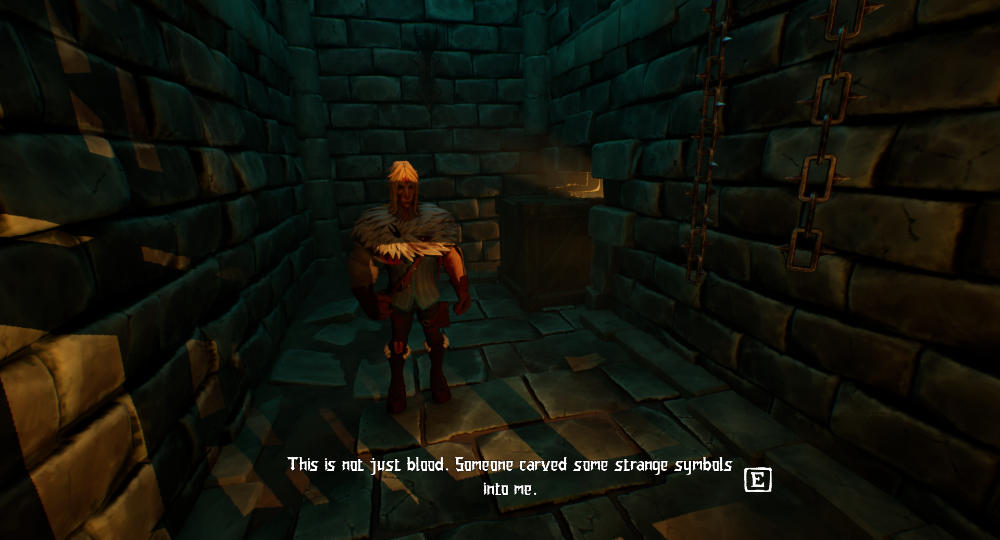
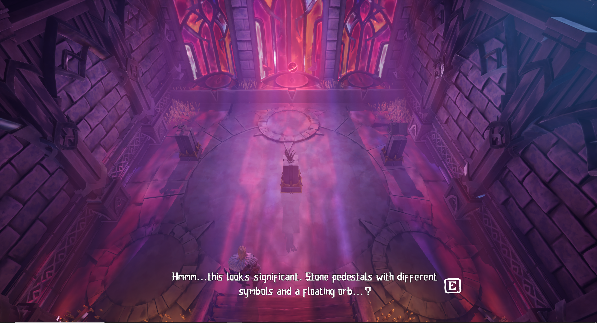
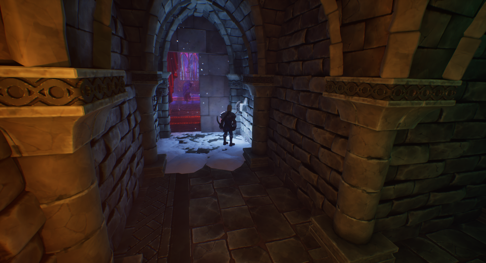
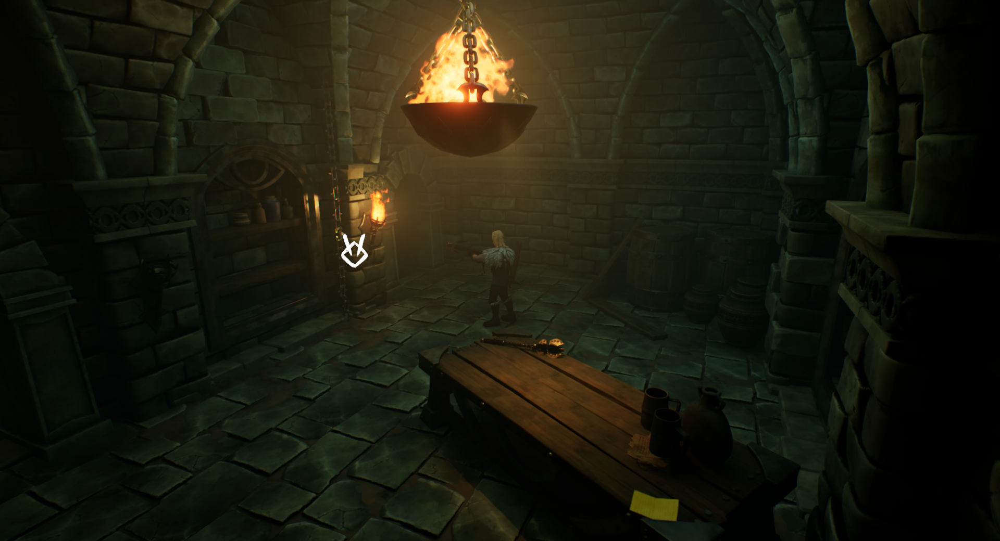
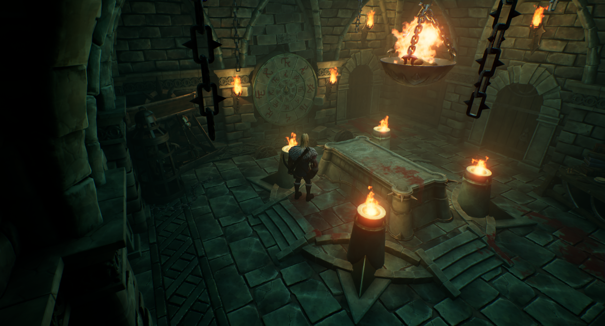

Inside The Crow’s Nest
- role
- Gameplay programmer — interaction system, climbing, dragging objects
- stack
- Unreal Engine 5
- team
- Multidisciplinary team: art, design, programming, music, production
Inside The Crow’s Nest is a survival-horror vertical slice in Unreal Engine 5 that we developed with a multidisciplinary team of artists, musicians, designers, and programmers. The player wakes up in catacombs without knowing how they got there, and must solve environmental puzzles to escape while gradually discovering what happened.
what i did
I was responsible for designing and implementing the interaction system from scratch. It had to be modular and scalable to support different puzzle types without rewriting half the code every time. I also developed mechanics such as climbing and dragging objects, which were key to the gameplay, and helped polish other systems when needed.
This project was an intensive Unreal Engine masterclass for me. I learned a lot about gameplay patterns and real-time debugging. But the most valuable takeaway was seeing firsthand how important communication is: when different departments are not aligned, builds break and everything gets more complicated.






credits
- Programming
- Carlos Mazcuñán, Lucas Calatayud, Enrique López, Daniel de Castro, Vicente Molina, Rodriggo Micó
- Music and VFX
- Enea Astori, Chutong Vheng, Handi Cui, Alex Fortunato, Wesley Lo, Ryley Yip, Barry Zhang
- Production
- Diana Rodriguez, Ismael Castellanos, Fernando Lara, Joaquin Rodriguez, Jordi Carazo, Lucas Soriano
tip: use ← → to move between projects